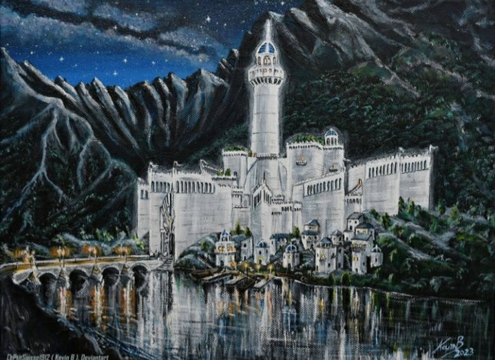

Minas Ithil, la Torre de la Luna Naciente
Historia
- Segunda Edad, año 3320. Isildur funda Minas Ithil para custodiar el paso hacia Mordor y la convierte en su residencia en Ithilien. En la torre guarda la Piedra de Ithil (una de las palantíri) y ante su casa crece un retoño del Árbol Blanco.
- Segunda Edad, año 3429. Sauron toma la ciudad por sorpresa y quema el árbol. Isildur escapa hacia el oeste llevando consigo una semilla y la palantír, y comienza la Guerra de la Última Alianza.
- Segunda Edad, año 3441. Con la derrota de Sauron, Gondor recupera la torre y la convierte en un puesto de vigía sobre las tierras de Mordor.
- Tercera Edad, año 1636. La Gran Peste arrasa el valle y casi despuebla la ciudad, que queda bajo el mando de una pequeña guarnición y debilita la vigilancia de las fronteras.
Identidad y características
Minas Ithil era una ciudad de mármol blanco cuyos muros estaban trabajados para reflejar la luz de la luna: al caer la noche, la ciudad entera brillaba con un resplandor plateado. Una torre de muchas ventanas dominaba la ciudadela, y su remate superior giraba lentamente para seguir el recorrido de la luna. Un puente blanco cruzaba el río Ithilduin, el Río de la Luna, y las praderas de ambas orillas eran el lugar de paseo y descanso de los habitantes.
Barrios y zonas
-
El Distrito de la Cúspide
Ver este lugar en la guía de lugares
El casco más alto de la Ciudadela de la Luna, donde se alza la gran torre de muchas ventanas y el palacio del Custodio de la Luna. Es el punto desde el que mejor se aprecian los dos lados de la ciudad al atardecer.
-
Los Jardines de la Ithildín
Terrazas de flores que solo se abren de noche, iluminadas por la luna, con caminos de suave brillo. Se cultivan desde la fundación de la ciudad.
-
El Barrio del Espejo de la Luna
El corazón comercial y festivo: plazas, fuentes de plata y el mercado donde se reúnen los viajeros que llegan por el camino desde el oeste.
-
Las Praderas del Puente Blanco
Ver este lugar en la guía de lugares
Los prados a ambas orillas del Ithilduin, junto al puente de piedra caliza. En primavera se celebran allí las ferias de flores y las regatas de barcos iluminados con linternas.
Costumbres
-
El Festival de la Luna Llena
Cada luna llena, los habitantes encienden linternas de papel de plata y las dejan flotar río abajo, de modo que la corriente se llena de luces. Se dice que quien confía un deseo a su linterna lo verá viajar hasta el mar.
-
La Hora del Silencio
Cuando el remate de la torre gira hacia el oeste y la luna se oculta tras las colinas, la ciudad guarda un minuto de silencio en memoria de los que no regresaron del valle.
-
La Caminata del Espejo
Recorrer a paso lento las fuentes del Barrio del Espejo y mirarse en ellas al mediodía. Es la costumbre de las parejas que prometen fidelidad y de los viajeros que piden un buen regreso.
